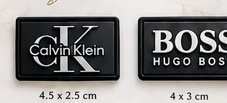
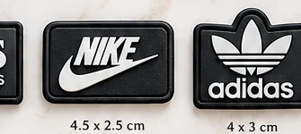
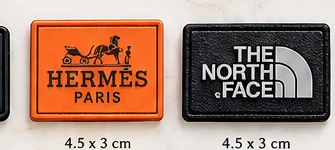
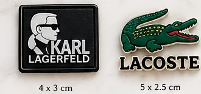

01 /
Özgün tasarım
Logonuza, ürününüze ve marka kimliğinize uygun ölçü ve form seçenekleri.
Ürününüzü tamamlayan premium kauçuk etiketler. Markanıza özel ölçü, renk ve kabartma seçenekleriyle tasarım fikrinizi özenli bir ürüne dönüştürüyoruz.

Farklı form ve kabartma örneklerine göz atın. Her tasarım, ürününüzün tarzı ve kullanım alanı düşünülerek şekillenir.




İlk çizgiden son kontrole kadar tasarımın her unsurunu ürününüzle uyumlu hale getiriyoruz.
Logonuza, ürününüze ve marka kimliğinize uygun ölçü ve form seçenekleri.
Yüzey dokusu, katman ve renk seçimleriyle daha güçlü bir görünüm.
Tasarımdan üretime kadar ihtiyacınıza göre ilerleyen bir çalışma süreci.
Ürününüzü, kullanım alanını ve beklentinizi konuşalım.
Ölçü, renk, form ve kabartma seçeneklerini netleştirelim.
Üretim öncesi tasarım ayrıntılarını birlikte onaylayalım.
Onaylanan tasarımı özenle üretip teslimata hazırlayalım.
Ölçü, adet ve tasarım fikrinizi WhatsApp üzerinden paylaşın; size uygun çözümü birlikte değerlendirelim.